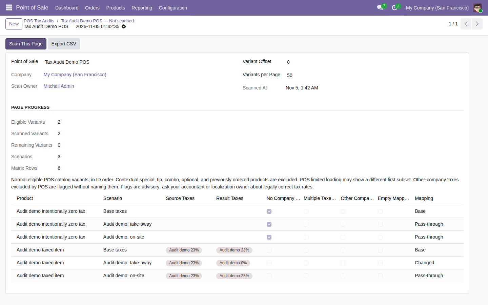

Review POS catalog taxes and configured fiscal-position mappings before opening a till.
Free, open-source Odoo 19 addon (LGPL-3). Requires the standard point_of_sale module.
Open Point of Sale → Configuration → Tax Setup Audit and scan a POS configuration.

Tested on Odoo 19 Community. Tax flags are advisory, not a legal tax determination. Enterprise compatibility, authenticated other-user direct CSV access in a browser, and console-error capture remain unverified.